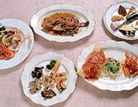
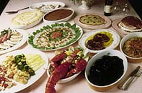

LUNCH COURSE
(11：30〜15：00) |
DINER COURSE
(17：00〜23：00) |
￥1,200 ￥2,500
￥1,800 ￥3,500
《￥2,500 COURSE一例》
- 前菜の盛り合わせ
- スパゲティー2品のどちらか
- 魚料理or肉料理
- サラダ
- パン
- デザート
- コーヒー
|
￥2,800 ￥5,000
(レディース)
￥3,500 ￥7,000
《￥5,000 COURSE一例》
- 前菜の盛り合わせ
- ミネストローネスープ又は
- スパゲッティー4種類のチーズ和え
又は
- カニの手打ちパスタ
- 海の幸の楽しい盛り合わせ
又は
- 仔牛のスネ肉の煮込み
- 季節のサラダ
- パン・グリッシーニ
- 本日のケーキ
- コーヒー

|
| PARTY COURSE |
￥7,000
料 理
オードブル盛合わせ
仔羊のロースト香草風味
シーフードサラダ
白身魚のグリル
煮込み野菜イタリア風
ボナぺティート特製ピザ
仔牛肉料理
パスタ料理
フルーツ盛合せ
デザート
飲 物
ビール、ワイン、ウイスキー、
ソフトドリンク
各種パーティーのご予約をお一人様\3,000から承っております。ただし、土曜日はお一人様\5,000からとなります。日、祭日の貸切りパーティーも可能ですので、ご予算、人数等お気軽にお問い合せ下さい。(個室もございます）

|
A・LA CARTE |
・トマトサラダ \850
・カプリ風サラダ
\1,500
・海老と茸の温製サラダ \1,600
・スパゲティーペペロンチーノ \1,200
・生ウニのスパゲティー \1,800
・魚の紙包み焼き \1,700
・本日の魚のインボルティーニ \1,900
・地鶏の魔女風 \2,000
・仔牛肉の生ハムのせ \2,900
《おすすめワイン》
・ガヴィ ディ ガヴィ
(白ワイン) \4,800
・ロッソ ディ モンタルチー
(赤ワイン) \4,800
※この他にも豊富に
取り揃えております。
|
◆姉妹店のご案内◆
ニコラス ピザハウス(六本木店)
ニコラス ピザハウス(新橋店)
to English page
|